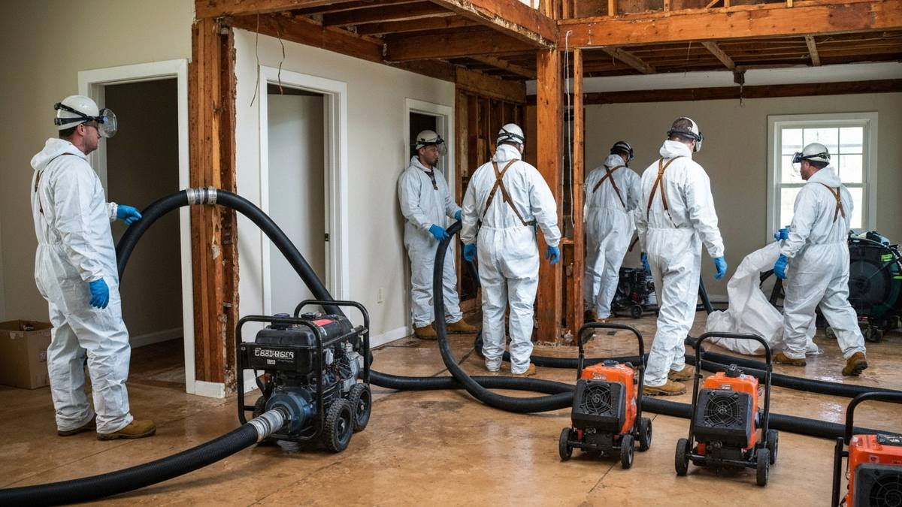

Collinsville is a growing Rogers County community of about 8,500 residents northeast of Tulsa, known for its tight-knit community feel and proximity to the Tulsa metro. The town sits in the rolling hills near Bird Creek, and its mix of older established homes and newer subdivisions reflects its gradual transition from rural agricultural town to Tulsa suburb. Oklahoma's volatile weather — ice storms in winter and severe thunderstorms with large hail in spring — creates year-round water damage scenarios. Tulsa Water Damage Pros extends full coverage to Collinsville with rapid emergency response.

Our Water Damage Restoration Process
- 24/7 Emergency Response — We answer calls day and night and dispatch to Collinsville immediately.
- Assessment & Documentation — We inspect damage and document for your insurance claim.
- Water Extraction — Industrial equipment removes standing water fast to limit structural damage.
- Drying & Dehumidification — Air movers and dehumidifiers run until moisture readings are normal.
- Mold Prevention & Restoration — We treat affected areas and restore your Collinsville home to pre-loss condition.
Why Collinsville Residents Call Tulsa Water Damage Pros
- Northeast Coverage — We serve Collinsville, Owasso, Claremore, and all of northeast Tulsa and Rogers County.
- Hail Storm Experience — Rogers County gets hit hard by hail — roof-related water intrusion is our specialty.
- 24/7 Emergency Response — Day or night, we dispatch to Collinsville for water damage emergencies.
- Insurance Support — Detailed documentation for your Rogers County homeowner's claim.

Frequently Asked Questions — Water Damage in Collinsville
Do you serve Collinsville for water damage emergencies?
Yes. Collinsville is approximately 15 miles northeast of Tulsa via US-169 and we dispatch there for emergency calls 24/7. We reach most Collinsville addresses within 40 to 50 minutes.
What water damage risks are most common in Collinsville?
Collinsville's most common scenarios involve pipe bursts during Oklahoma's hard freezes, roof leaks from hail storms tracking through Rogers and Tulsa counties, and crawl space moisture issues in older homes near Bird Creek.
Does Collinsville's older housing stock require different restoration techniques?
Yes. Many Collinsville homes were built in the 1950s through 1980s and may have older cast iron or galvanized plumbing that is more prone to failure. We account for these factors in our assessment and documentation.
Water Damage in Collinsville? Call 24/7
Every hour counts. We serve Collinsville with rapid response and full restoration services.
📞 Call (918) 723-2096